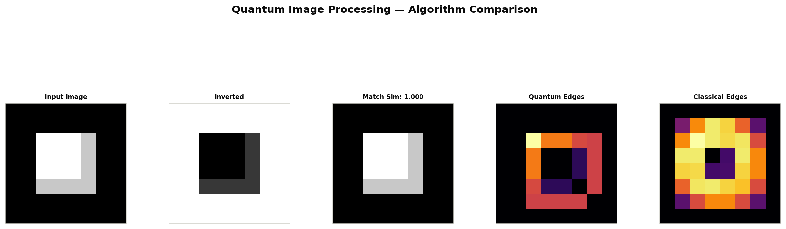

Quantum Image
Processing
End-to-end quantum algorithms for image inversion, image matching, and edge detection. Implemented in Qiskit 2.4 using NEQR encoding and validated against classical baselines with full metrics.
Table of Contents
Algorithm Overview
All three algorithms share a common quantum image representation — NEQR — and are implemented on Qiskit's statevector and QASM simulators, faithfully modelling future gate-based quantum hardware.

Figure 1. Side-by-side results for all three algorithms on a structured test image: original → inverted → matched → quantum edges → classical edges.
NEQR — Novel Enhanced Quantum Representation
Every image is encoded as a quantum superposition over all pixel positions:
This representation allows quantum parallelism: one circuit evaluation simultaneously processes all 22n pixels.
Quantum Advantage Summary
| Algorithm | Classical | Quantum |
|---|---|---|
| Inversion | O(N) | O(1) gates |
| Matching | O(N) | O(√N) |
| Edge Detection | O(N·k) | O(n) |
Encoding Cost
| Component | Qubits | Gates |
|---|---|---|
| Value register | 8 | — |
| Position (N×N) | 2·log₂N | O(2ⁿ) |
| SWAP test ancilla | 1 | n+2 |
01 — Image Inversion
Pauli-X gates on the value register flip every pixel in O(1) extra gates.
Read docs →02 — Image Matching
SWAP test estimates quantum fidelity between two amplitude-encoded images.
Read docs →03 — Edge Detection
Quantum cyclic shift on position register computes pixel differences in superposition.
Read docs →Benchmark Metrics
All results are validated against classical ground-truth implementations. Metrics are computed on 8×8 test images simulated with Qiskit Aer's exact statevector backend.
Inversion Quality
Matching Accuracy
Edge Detection Correlation
Project Structure
quantum-image-processing/
├── src/
│ ├── encoding.py # NEQR encoder — shared by all algorithms
│ ├── inversion.py # Quantum image inversion
│ ├── matching.py # Quantum SWAP-test image matching
│ ├── edge_detection.py # Quantum Hadamard edge detection
│ └── generate_figures.py # Figure export pipeline
├── docs/
│ ├── inversion/
│ │ └── index.html
│ ├── matching/
│ │ └── index.html
│ └── edge-detection/
│ └── index.html
├── assets/
│ ├── css/style.css
│ ├── js/main.js
│ └── images/ # Auto-generated result figures
└── index.html # This pageReferences
NEQR Representation
Zhang, Y. et al. (2013). NEQR: A Novel Enhanced Quantum Representation of Digital Images.
Quantum Inf. Processing →Quantum Edge Detection
Yao, X. et al. (2017). Quantum Image Processing and its Application to Edge Detection.
Phys. Rev. X →Amplitude Encoding
Schuld, M. & Petruccione, F. (2021). Machine Learning with Quantum Computers.
Springer →Quantum Advantage
Biamonte, J. et al. (2017). Quantum Machine Learning. Nature 549, 195–202.
Nature →